fizz & go™ easy mix
butelka termiczna
ze stali nierdzewnej
i Tritanu, miętowa,
710 ml
idealnie schłodzone
napoje nawet do
6h
idealnie schłodzone napoje nawet do 6h
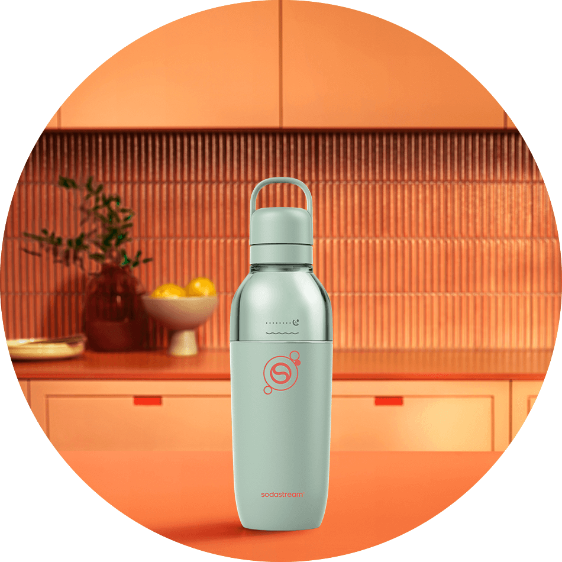
Twój styl, Twój rytm, Twoje bąbelki
Poznaj Sodastream fizz&goTM easy mix – butelkę, która będzie z Tobą przez cały dzień. Od porannego pośpiechu, przez intensywne spotkania, aż po trening czy chwilę relaksu – będzie zawsze tam, gdzie Ty. To innowacyjna butelka 3 w 1, w której bezpośrednio nagazujesz wodę, a jednocześnie wykorzystasz ją jako bidon lub elegancki kubek do napojów – wystarczy odkręcić górną część, by cieszyć się jej funkcjonalnością. To nie tylko praktyczne rozwiązanie, ale również modny dodatek. Pastelowy, miętowy kolor w matowym wykończeniu przyciąga spojrzenia i subtelnie podkreśla każdy look!
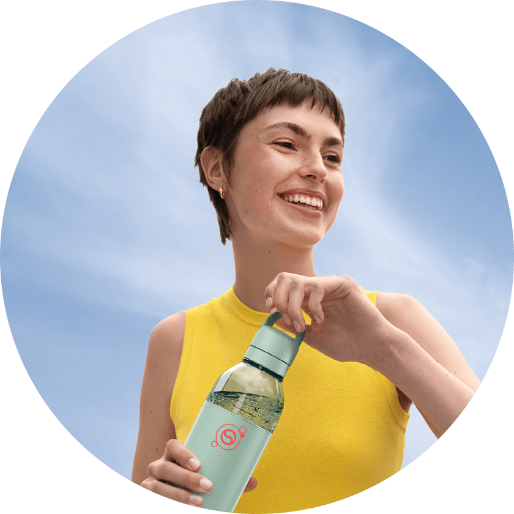
pastelowy
urok
modna mięta Niebanalny i świeży odcień dla tych, którzy nie boją się koloru i chcą ożywić stylizację oryginalnym dodatkiem.
postaw na kolor dopasowany do Ciebie
Klasyczny granat, delikatny beż czy subtelna mięta? Który odcień stanie się Twoim numerem jeden?
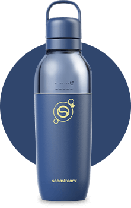
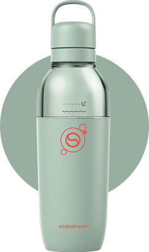
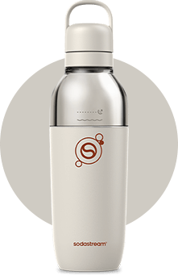
orzeźwienie bez ograniczeń
Jedna butelka – wiele zastosowań, wielki styl! Gdy design idzie w parze z funkcjonalnością, codzienność staje się prostsza. Butelkę Sodastream fizz&goTM easy mix możesz błyskawicznie rozłożyć na 4 części i dokładnie umyć każdy jej element. Szczelna konstrukcja chroni przed wyciekaniem napoju, a podwójne ścianki pomagają utrzymać jego chłodną temperaturę nawet do 6 godzin.
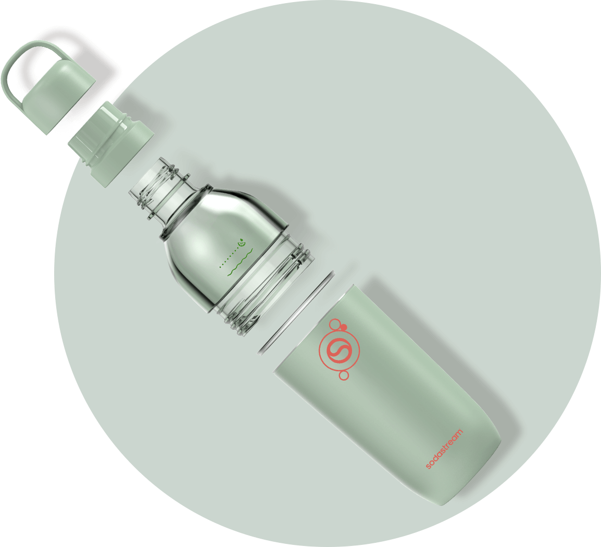
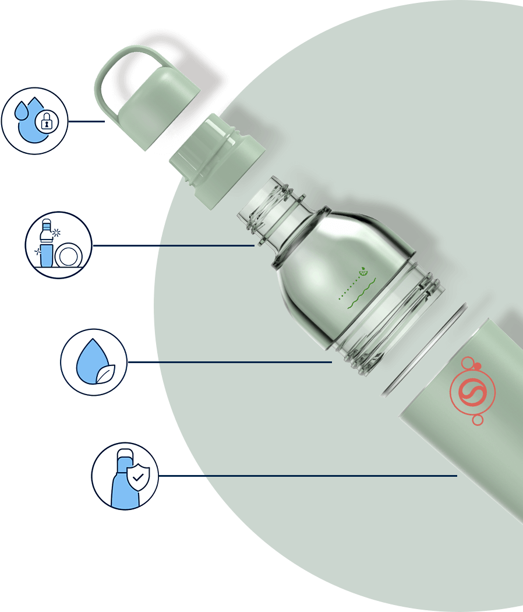
szczelny korek
odpowiednia do
mycia w zmywarce
Tritan wolny od BPA
stal nierdzewna 18/8
odporna
na
korozję i uszkodzenia
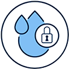
szczelny korek
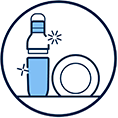
odpowiednia do mycia w zmywarce
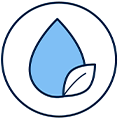
Tritan wolny od BPA
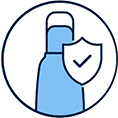
stal nierdzewna 18/8 odporna na korozję i uszkodzenia
Sodastream fizz&go™ easy mix
styl, który dba o planetę
Z Sodastream fizz&go™ easy mix codzienne rytuały nabierają nowego znaczenia. Poranna
woda z bąbelkami,
kawa z ulubionej
kawiarni, łyk napoju w drodze na spotkanie – w stylowej butelce smakują lepiej i
jednocześnie pomagają
zastąpić
jednorazowe butelki i kubki. To prosty sposób, by dobre eko-nawyki stały się naturalną
częścią Twojej
codzienności!
Wybierz wielorazowe rozwiązanie Sodastream fizz&go™
easy mix i podejmuj decyzje dobre dla Ciebie i planety.
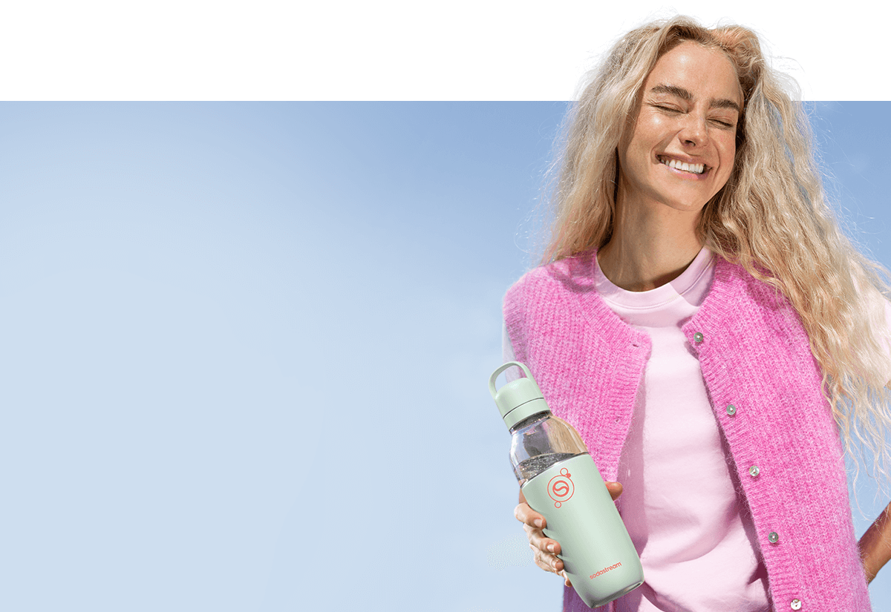
fizz&go™ easy mix – dowiedz się więcej o butelce do zadań specjalnych od Sodastream®
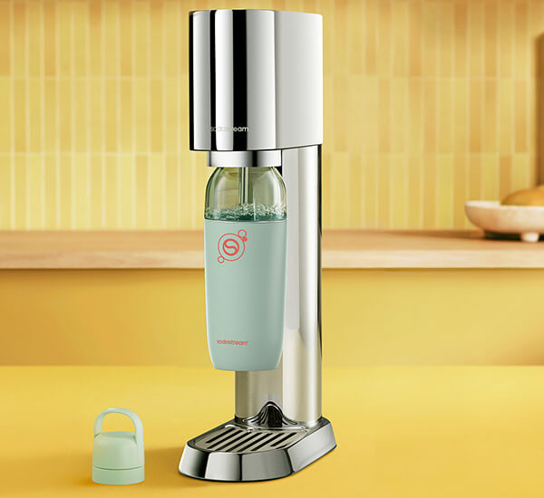
Czy butelka Sodastream fizz&go™ easy mix
jest szczelna?
Nie musisz obawiać się, że Twój napój wyleje się do torby lub plecaka. Butelka ma
precyzyjnie
dopasowany, szczelny
korek, który chroni przed przeciekaniem. Możesz bez obaw zabrać ją wszędzie –
do
pracy,
na spacer czy
trening –
i cieszyć się napojem w każdej sytuacji.
Czy rozkręcana konstrukcja rzeczywiście ułatwia
mycie butelki?
To prawdziwy przełom wśród butelek. Dzięki modułowej konstrukcji, rozkładanej na 4
części, znacznie
łatwiej dotrzeć do trudno dostępnych miejsc i dokładnie wyczyścić uporczywe
zabrudzenia, np. po odżywce
białkowej czy
koktajlu. Co więcej,
możesz ją myć zarówno ręcznie,
jak i w zmywarce
Do których modeli urządzeń Sodastream® pasuje
butelka Sodastream fizz&goTM easy mix?
Sodastream fizz&go™ easy mix została zaprojektowana tak,
by pasowała do saturatorów
Sodastream® Terra,
Art, Mix
i Ensō. Dzięki temu możesz każdego dnia cieszyć się
pysznymi, orzeźwiającymi
bąbelkami w stylowej
oprawie.
jedna butelka, nieskończone możliwości w ciągu dnia
Masz sporo zadań w ciągu dnia i nie chcesz iść na kompromisy? Już nie musisz! Butelka SodaStream fizz&goTM easy mix będzie Ci towarzyszyć przez cały dzień, wspierając Cię w codziennych wyzwaniach.
Mniej rzeczy, więcej porządku – nie potrzebujesz wielu gadżetów, żeby mieć ze
sobą wszystko,
czego potrzebujesz – wystarczy jedno, niezwykle
funkcjonalne rozwiązanie! Chcesz mieć ze sobą na co dzień bidon, butelkę izotermiczną,
shaker lub kubek
na napoje?
Butelka Sodastream fizz&goTM easy mix spełni wszystkie te funkcje!
Aktywność w ruchu, relaks w spokoju – niezawodny bidon dotrzyma Ci tempa podczas
treningu, a gdy
przyjdzie czas regeneracji, zameni się w praktyczny shaker do
odżywek.
Gdy zechcesz się odprężyć, będziesz mieć go zawsze pod ręką, by delektować się
kawą, napojem lub
ulubionym koktajlem.
Twój smak, Twoje zasady –Masz ochotę przełamać smak bąbelków owocowym akcentem?
Dzięki
rozkręcanej konstrukcji butelki możesz dodać, do
nagazowanej wody, co tylko chcesz – mrożone truskawki, kawałki grejpfruta, świeże zioła,
a także kostki
lodu – bez obaw,
że nie zmieszczą się
w otworze butelki.
Efektowny design, zachwycająca funkcjonalność – praktyczne przedmioty mogą
również zachwycać!
Butelka Sodastream fizz&goTM easy mix świetnie komponuje się zarówno ze
sportowymi outfitami, jak i eleganckimi, biznesowymi kreacjami – jest stylowa,
uniwersalna i zawsze pod
ręką, gdy
potrzebujesz nawodnienia w ciągu dnia.
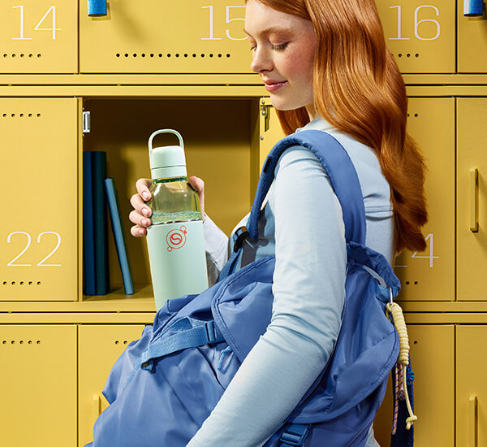
więcej możliwości, więcej smaku!
Rozsmakuj się w orzeźwieniu z syropami Sodastream! Dodaj ulubiony smak do gazowanej wody i stwórz własny napój, idealnie dopasowany do Twojego gustu, pełen świeżości i wyjątkowego smaku.
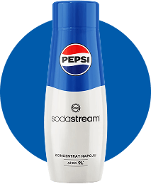
znane i lubiane
Już nie musisz chodzić do sklepu, by napić się klasyków znanych ze sklepowych półek, takich jak Pepsi®, Mirinda® czy 7UP®. Teraz możesz przygotować je we własnym domu, dopasowując zarówno ilość bąbelków, jak i stopień słodkości do swoich upodobań. Ciesz się kultowym orzeźwieniem i serwuj spersonalizowane napoje bliskim!
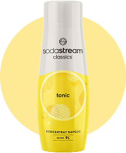
niezawodne klasyki
Postaw na sprawdzone smaki Coli, Tonicu i Xtreme Energy – przygotuj je klasycznie lub w zupełnie nowej wersji. To doskonała baza do eksperymentów z moktajlami, które zachwycą Ciebie i Twoich bliskich. Jakimi dodatkami wzbogacisz napój tym razem?
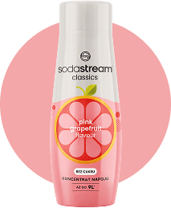
letni klimat przez cały rok
Przywołaj lato z owocowymi syropami Sodastream® np. o smaku Marakui, Lemoniady lub Pomarańczy Mango! Przygotuj na ich bazie kolorowe lemoniady z kostkami lodu i sezonowymi owocami. Rozsmakuj się w słodkich, choć bez dodatku cukru napojach i ciesz się letnim vibe’em o każdej porze roku!